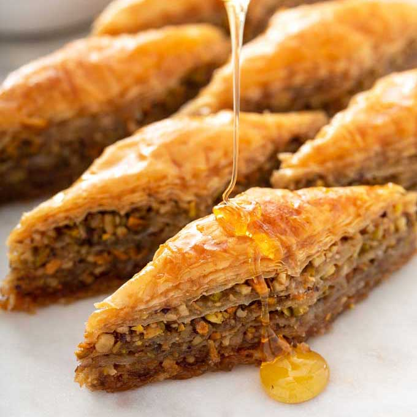

baklava

Description
This honey baklava is flaky, crisp and tender and I love that it isn’t overly sweet. It’s basically a party in your mouth. I am a huge fan of baklava and this is the BEST baklava recipe I have ever tried. Hands down.
Ingredients
- 1 (16 oz) package of phyllo (fillo) dough
- butter idk
- honee
Steps
- Thaw phyllo dough according to package instructions (this is best done overnight in the fridge, then place it on the counter for 1 hour before starting your recipe to bring it to room temp).
- Trim phyllo dough to fit your baking sheet. My phyllo dough package had 2 rolls with a total of 40 sheets that measured 9×14 so I had to trim them slightly. You can trim one stack at a time then cover with a damp towel to keep from drying out.
- Butter the bottom and sides of a 13×9 non-stick baking pan.